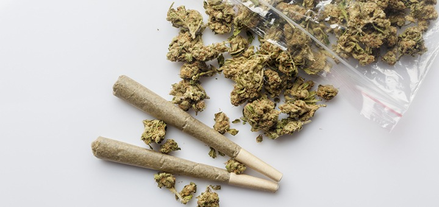

11 CURIOSIDADES DEL CANNABIS
¿Cuánto sabes sobre el cannabis? Descubre 11 curiosidades del cannabis y una relación de datos divertidos
sobre nuestra hierba preferida.
1.- Bill Gates a través de su fundación, la Fundación Rockefeller, Monsanto, Dupont y otros
inversionistas han asegurado una “bóveda de semillas del fin del mundo” para preservar una amplia
variedad de semillas de plantas en el remoto archipiélago ártico de Svalbard. Una especie de arca de Noé
de semillas.
2.- La cerveza y el cannabis son PRIMOS! El lúpulo de la cerveza está en la misma familia de plantas con
flores que el cannabis. Somos una gran familia.
3.-Adiós al paraíso prometido, si te habían llegado rumores de que en Corea del Norte el cannabis es
legal, sentimos decirte que La hierba es ilegal en Corea del Norte y lo más probable es que continúe
siéndolo.
4.- En 1976, un estudiante de arte cambió el letrero de Hollywood para que dijera “Hollyweed” después de
la aprobación de una ley estatal que despenalizaba el cannabis. Creatividad nivel Dios.
5.-El 10 de diciembre de 2013 se aprobó una ley para regular el mercado, producción y comercialización
del cannabis (siempre controlado por las autoridades), posesión de cannabis, uso recreativo y medicinal
y uso industrial. Uruguay se convirtió en el primer país del mundo en legalizar por completo la venta y
cultivo de cannabis.
6.- El dimetilheptilpirano o (DMHP) para abreviar se descubrió en 1949. Este análogo sintético del THC
es un aceite de color amarillo pálido. Los efectos son similares a los del THC, pero mucho más potentes.
Los efectos incluyen sedación, analgésicos, anticonvulsivos y un leve efecto alucinógeno.
7.- 789 gramos de cannabis de 2.700 años de antigüedad fueron encontrados en una tumba china en 2008.
¿Gran fiesta en el más allá?
8.- Bob Marley fue enterrado con su guitarra Gibson roja, una Biblia abierta al Salmo 23 y un brote de
cannabis.
9.- La primera transacción de comercio electrónico fue la venta de hierba, hecha por los estudiantes de
Stanford en 1971. Dicho esto, algunas personas pueden discutir que esto no cuenta ya que Internet sólo
se utilizó para organizar el encuentro y no la compra real.
10.- Varios de los fragmentos de pipa de William Shakespeare dieron positivo en residuos de marihuana.
Pero dada su creatividad ahora es más sencillo entender muchas cosas.
11.- Un fumador de marihuana teóricamente tendría que fumar cerca de 680 Kgs. de marihuana en unos
quince minutos para morir de ella. ¡Eso es mucha hierba!

100 MANERAS DE COLOCARSE
Una mujer se lanzó a la búsqueda de explorar formas alucinantes de consumir marihuana y las fue alcanzando, hasta que demostró 100 de ellas.